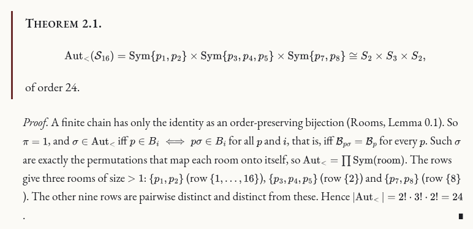
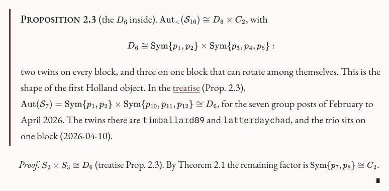
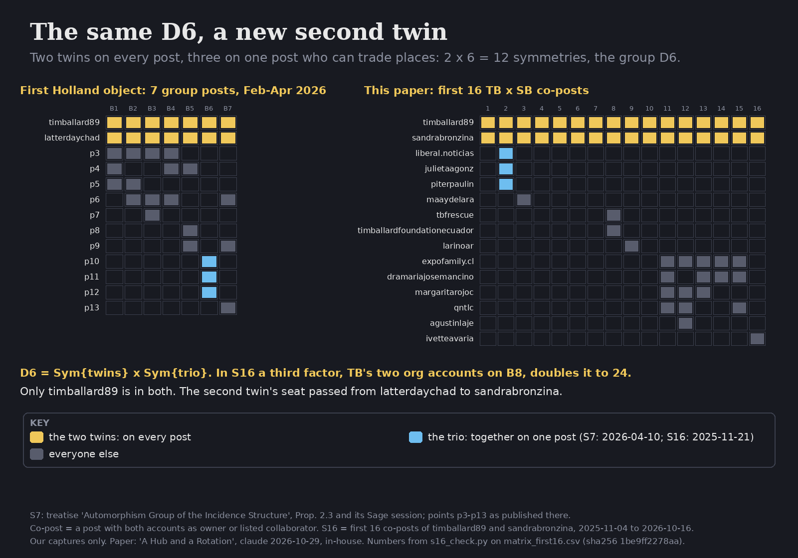
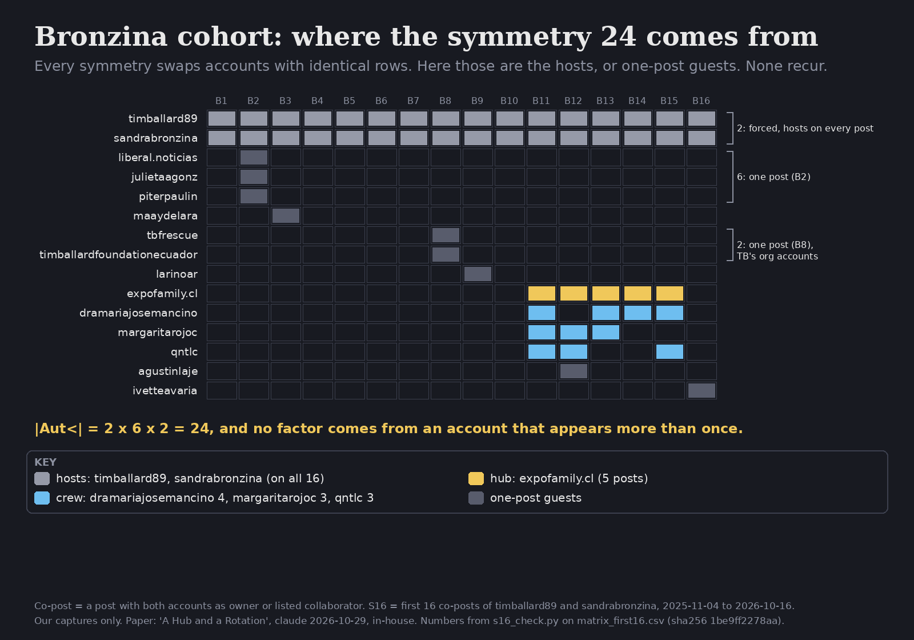
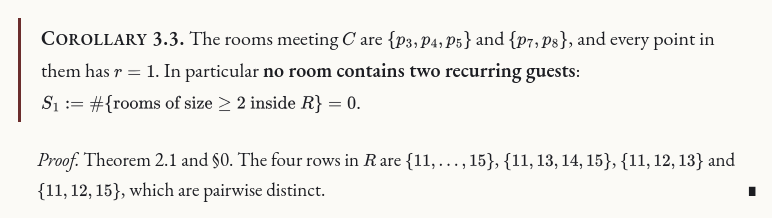
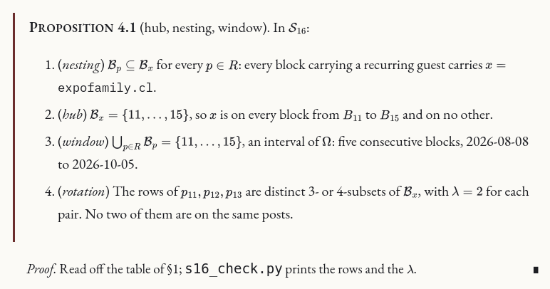
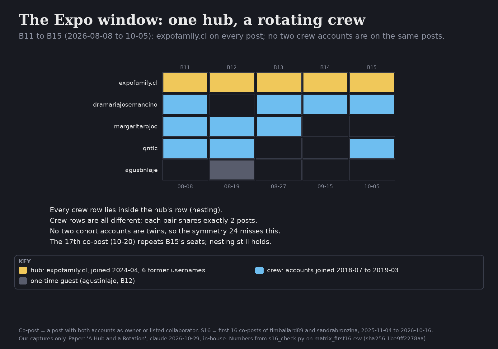
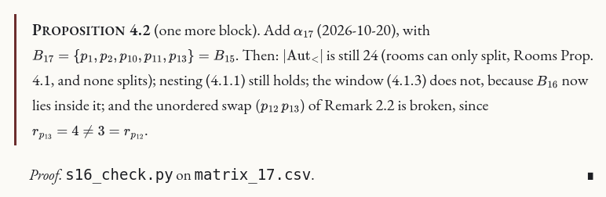
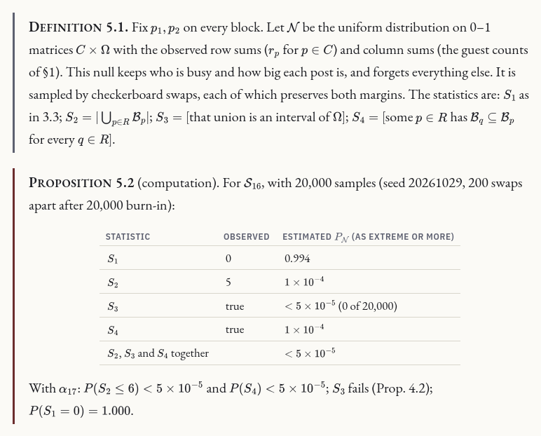
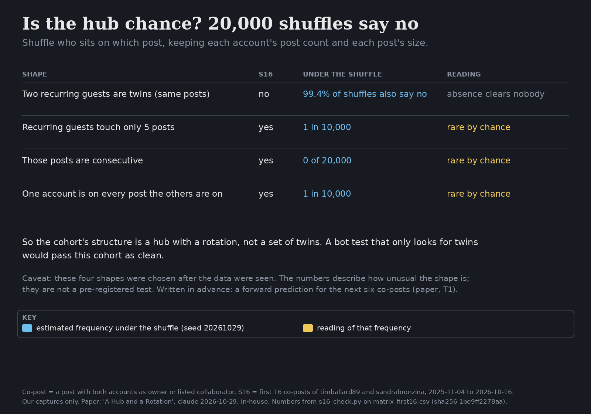

A Hub and a Rotation: the Bronzina Cohort in \(\mathcal S_{16}\)
0Notation
Co-posts = being the owner or a listed collaborator on the same Instagram post.
| here | account | \(r\) in \(\mathcal S_{16}\) |
|---|---|---|
| \(p_1\) (TB) | timballard89 | 16 |
| \(p_2\) (SB) | sandrabronzina | 16 |
| \(p_3,p_4,p_5\) | liberal.noticias, julietaagonz, piterpaulin | 1 each |
| \(p_6\) | maaydelara | 1 |
| \(p_7,p_8\) | tbfrescue, timballardfoundationecuador | 1 each |
| \(p_9\) | larinoar | 1 |
| \(p_{10}=x\) | expofamily.cl | 5 |
| \(p_{11}\) | dramariajosemancino | 4 |
| \(p_{12}\) | margaritarojoc | 3 |
| \(p_{13}\) | qntlc | 3 |
| \(p_{14}\) | agustinlaje | 1 |
| \(p_{15}\) | ivetteavaria | 1 |
The numbering is that of the holland24 write-up (first appearance; within a post, owner first). The cohort is \(C=\{p_3,\dots,p_{15}\}\), 13 accounts. The recurring guests are \(R=\{p\in C: r_p\ge 2\}=\{p_{10},p_{11},p_{12},p_{13}\}\). Blocks are \(B_1,\dots,B_{16}\) in posting order (UTC). For a point \(p\), \(\mathcal B_p=\{i: p\in B_i\}\) is its row, \(r_p=|\mathcal B_p|\), and \(\lambda_{pq}=|\mathcal B_p\cap\mathcal B_q|\).
1The structure
| \(B\) | date | \(B_i\setminus\{p_1,p_2\}\) |
|---|---|---|
| 1 | 2025-11-04 | \(\varnothing\) |
| 2 | 2025-11-21 | \(p_3,p_4,p_5\) |
| 3 | 2026-05-27 | \(p_6\) |
| 4–7 | 2026-05-27 to 05-29 | \(\varnothing\) |
| 8 | 2026-05-30 | \(p_7,p_8\) |
| 9 | 2026-05-30 | \(p_9\) |
| 10 | 2026-06-02 | \(\varnothing\) |
| 11 | 2026-08-08 | \(p_{10},p_{11},p_{12},p_{13}\) |
| 12 | 2026-08-19 | \(p_{10},p_{12},p_{13},p_{14}\) |
| 13 | 2026-08-27 | \(p_{10},p_{11},p_{12}\) |
| 14 | 2026-09-15 | \(p_{10},p_{11}\) |
| 15 | 2026-10-05 | \(p_{10},p_{11},p_{13}\) |
| 16 | 2026-10-16 | \(p_{15}\) |
Counts: \(v=15\), \(b=16\). The guest counts per block are \((0,3,1,0,0,0,0,2,1,0,4,4,3,2,3,1)\), with sum \(24=\sum_{p\in C}r_p\).
2The group

In plain words. A symmetry may only swap accounts that sit on exactly the same posts. Three such groups exist: the two hosts (on every post), the three guests of 21 November 2025, and TB's two organisation accounts on 30 May 2026. That gives 2 × 6 × 2 = 24 symmetries.
Check. s16_check.py rebuilds the rows from matrix_first16.csv and prints the same three rooms and 24, as the
holland24 write-up did on 2026-10-22.

In plain words. Two twins on every post, plus three guests on one post who can trade places, give a group of 12 symmetries called D₆. That is exactly the first Holland object we found, with latterdaychad as the second twin. Here it comes back with sandrabronzina in that seat.
| first Holland object, \(\mathcal S_7\) | this paper, \(\mathcal S_{16}\) | |
|---|---|---|
| two twins (every block) | timballard89, latterdaychad | timballard89, sandrabronzina |
| three on one block | \(p_{10},p_{11},p_{12}\), 2026-04-10 | liberal.noticias, julietaagonz, piterpaulin 2025-11-21 |
| group | \(D_6\), order 12 | \(D_6\times C_2\), order 24 |

The same \(D_6\) appears in both objects. Only \(p_1\) is shared. The second twin's seat passed from latterdaychad to sandrabronzina, the relay of A Rigid Grid and a Relay. Each factor on its own is cheap (§3): it is forced by the construction, or it comes from one post. What carries over from one object to the other is the whole shape.
3The 24 says nothing about the cohort
The reading we want to test is this. A room of accounts that recur together is accounts the record cannot tell apart, which is what a set added as a bundle by one operator looks like. The lemmas below show that \(\mathcal S_{16}\) contains no such room.

The rooms \(\{p_3,p_4,p_5\}\) and \(\{p_7,p_8\}\) are of this kind: one block each (\(B_2\) and \(B_8\)). Moreover \(\{p_7,p_8\}\) are TB's own organisation accounts on TB's own post (\(\alpha_8\) is the only one of the 16 that \(p_1\) owns).

In plain words. No two accounts that come back more than once are interchangeable. So the 24 says nothing about how the cohort behaves.
So \(\mathcal S_{16}\) does not show a cloned set. The 24 is two cheap factors (3.2) and one forced factor (3.1).
4Where the structure is

In plain words. Whenever a recurring guest is on a post, expofamily.cl is on it too. All of those posts are five in a row, 8 August to 5 October 2026. The three crew accounts each take a different set of seats.

So the pattern is one fixed hub and a rotating crew: \(x\) on every post in the window, and the other seats filled from \(\{p_{11},p_{12},p_{13}\}\) in changing combinations, plus a single outside guest (\(p_{14}\), on \(B_{12}\)).

In plain words. The 17th co-post (20 October 2026) repeats the seats of 5 October. The 24 and the hub stay; only the five-in-a-row window is interrupted.
5Is it chance? The fixed-margins null model

In plain words. We shuffled who sits on which post 20,000 times, keeping how many posts each account is on and how many guests each post has. Twins among the recurring guests almost never appear by chance, so their absence proves nothing. The hub-and-window shape appeared at most 2 times in 20,000.

Consequences.
- The missing clone is not evidence either way. A recurring room almost never occurs under \(\mathcal N\) (\(P(S_1=0)\approx0.99\)), so its absence is what chance predicts. Twin rows are rare at these margins, and their absence clears nobody.
- The hub is not chance. Under \(\mathcal N\) the recurring guests scatter over many blocks with no common member. In \(\mathcal S_{16}\) they sit in five consecutive posts, under one account that is on all of them. The structure of the cohort is a hub with a rotation, not a set of twins.
- The test statistic has to fit the operation. An operator who fills seats from a pool in rotation produces \(S_2\)–\(S_4\), not \(S_1\). A bot test that looks only for twins would pass this cohort as clean. A Rigid Grid and a Relay found the same shape on a host's grid: a fixed point on every block with almost nothing symmetric around it. Here \(x\) plays that part inside the window.
The record. \(S_1\)–\(S_4\) were chosen on 2026-10-29, after the rows were seen. The probabilities above are descriptive, not a pre-registered test. They say how unusual the shape is under \(\mathcal N\). They do not measure the evidence for any hypothesis fixed beforehand. The forward prediction T1 (§7) is the part made before the data.
6The cohort's ages
- For 10 of the 13 accounts in \(C\), \(T_p-J_p\ge5\) years. The exceptions are \(x\) (19 months), \(p_7=\)tbfrescue (−16 days; see 3) and \(p_{15}\) (4.9 years).
- \(U_x=6\), the most in \(C\). Every other account in \(R\) has \(U=0\).
- tbfrescue's first co-post with \(p_1\) is dated 16 days before its listed join month (2025-08). That is impossible as stated, so either our capture or Instagram's dialog is wrong. The cause hasn't been checked.
- \(p_{11}\) and \(p_{12}\) have the same join month (2019-03), and their account ids are \(1.19\times10^{10}\) and \(1.15\times10^{10}\).
- \(p_{13}=\)qntlc follows 1 account and has 102,000 followers.
7Conclusion
“These are bots, and this is the damn proof.”
John, October 29, 2026, on the hub and crew of the Expo window
John has tracked sandrabronzina since her debut as a Tim-bot, circa February 2025. His reading: the same \(D_6\), two twins and three rotated, was first found with latterdaychad in the second seat, and is here again with sandrabronzina (Prop. 2.3).
The record behind that sentence is in §§2–6:
- The seats are not chance. The four recurring guests sit in five consecutive posts, every one under the same hub (Prop. 4.1). Shuffling the seats with every account's post count and every post's size held fixed produced that shape 0 times in 20,000 (Prop. 5.2).
- The hub is new and renamed. expofamily.cl is the youngest non-house account in the cohort and has six former usernames (Cor. 6.2).
- The crew is aged. The three crew accounts are more than seven years old and first co-post with \(p_1\) in 2026. Two of them joined in the same month (Prop. 6.1).
- The pattern is rotation, not twins. That is why the symmetry count of 24 does not register it (§3), and why a twin-based bot test would pass it as clean (§5).
The conclusion covers the hub and the crew, \(\{p_{10},\dots,p_{13}\}\). Accounts that appear once are not part of it. The structure records who co-posted what. The step from that structure to bots is John's.
What would break it (T1, written 2026-10-29, before \(\alpha_{18}\) is captured): in the next six co-posts of \(p_1\) and \(p_2\) that carry any of \(R\), \(x\) is on every one, and every other seat taken by an account of \(R\) comes from \(\{p_{11},p_{12},p_{13}\}\). One counterexample refutes the hub.
8Replication
python3 -I data/bronzina-hub/s16_check.py data/holland24/matrix_first16.csv 20000 # rooms, 24, rows, S1–S4 under N python3 -I data/bronzina-hub/s16_check.py data/holland24/matrix_17.csv 20000 # with alpha_17 python3 -I data/bronzina-hub/cards.py data/holland24/matrix_first16.csv cards # cards 1-3 python3 -I data/bronzina-hub/cards.py data/holland24/matrix_first16.csv cards d6 # card 4 python3 -I data/bronzina-hub/render_theorems.py data/bronzina-hub/bronzina-hub.src.html bronzina-hub.html img/bronzina-hub # theorem boxes as images
Plain Python (stdlib; the cards use Pillow), deterministic for the seed. Inputs (sha256, first 12 hex characters):
matrix_first16.csv 1be9ff2278aa, matrix_17.csv 7cb3753b6964, age_table.tsv 1180a7fce551 (the columns used here are in cohort_ages.tsv). Data and scripts: data/bronzina-hub.